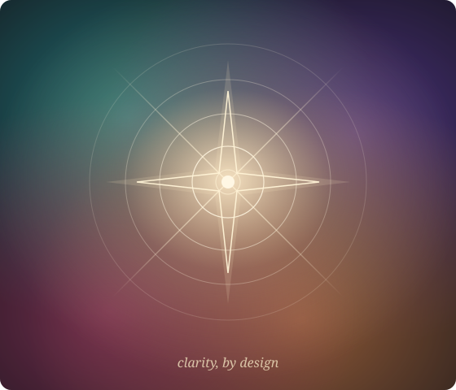

ما یک مشاور استراتژیک بازاریابی هستیم — نیرو گرفته از هوش مصنوعی، هدایتشده با قضاوت انسانی. به کسبوکارهای جاهطلب وضوح میدهیم تا دقیقاً بدانند به چه کسی خدمت میکنند، چرا برنده میشوند و گام بعدی کجاست. کاری سنجیده، ساختهشده برای ماندگاری.

چیز ارزشمندی ساختهاید. به استراتژی بازاریابیای نیاز دارید بهاندازهٔ خودِ کسبوکار جدی — مسیری روشن که با اطمینان پشتش بایستید.
مشاوران، بروکرها، کلینیکها و شرکتهایی که با اعتماد برنده میشوند. جایگاه شما را تیزتر میکنیم تا مشتریِ درست در چند ثانیه ارزشتان را بفهمد.
پست میگذارید، اما اثرش انباشته نمیشود. کارِ بیحاصل را با یک سیستم جایگزین میکنیم — چه بگویید، به چه کسی، و چرا به عمل میانجامد.
استراتژی را درست کنید تا تاکتیکها بالأخره انباشته شوند. آن شکاف — میان تلاش و جهت — همان فرصتی است که ما برای پر کردنش وجود داریم.
مثل بقیه به نظر میرسید، پس قیمت تنها تفاوتی میشود که مشتری میبیند.
حرفزدن با همه یعنی اثرگذاری بر هیچکس. پیام محو میشود.
پستهای پراکنده، بدون قیف، بدون خط روایت — تلاشی که هرگز انباشته نمیشود.
علاقه ایجاد میشود، بعد از دست میرود، چون چیزی آن را بهسوی تصمیم هدایت نمیکند.
باور داریم بازاریابی، نظمِ وضوح است، نه حجم. کار این است که کسبوکار را عمیق بفهمیم، تصمیم بگیریم برای چه میایستد، و آن را با خویشتنداری بیان کنیم. هوش مصنوعی به ما امکان میدهد این کار را سریعتر و دقیقتر از همیشه انجام دهیم — اما قضاوت، ذوق و پاسخگویی انسانی است. همین، تفاوتِ یک ابزار هوش مصنوعی با یک مشاور است.
سه حرکت که یک کسبوکار را به استراتژیای تبدیل میکند که فردا قابل اجراست.
کسبوکار، مخاطب و بازاری که در آن رقابت میکنید را مطالعه میکنیم — بنیانی که همهچیز بر آن استوار است.
دقیقاً تعریف میکنیم به چه کسی خدمت میکنید و چرا شما — نه رقبا. جایگاهی یکتا، مرتبط و باورپذیر.
ستونهای محتوا، یک قیف و برنامهٔ سیروزه دریافت میکنید — تا همیشه بدانید چه منتشر کنید، و چرا.
هر همکاری با استراتژی آغاز میشود. مسیرِ بعدی با شماست.
یک استراتژی بازاریابیِ کامل و شخصیسازیشده — از یک فرم، و پالایششده توسط استراتژیست.
مشاهدهٔ بلوپرینت →یک شریک استراتژیکِ ارشد در دسترس — جایگاه، اولویتها، و نگاهِ دومِ آرام که رشد را در مسیر نگه میدارد.
رزرو جلسه →جایگاهی که بازار به یاد میسپارد و رقبا نمیتوانند کپی کنند.
رزرو جلسه →محتوای استراتژیمحور با صدای شما — شبکههای اجتماعی، مقاله، ایمیل و اسکریپت که به اعتماد میانجامد.
رزرو جلسه →ماشینِ خاموشی که استراتژی شما را به هر مشتری تحویل میدهد — قابلاتکا و هماهنگ با برند.
رزرو جلسه →یک جلسهٔ رایگان رزرو کنید تا با هم بفهمیم از کجا شروع کنیم.
رزرو جلسهٔ استراتژی →یک فرم. حدود هشت دقیقه. در عوض، یک همکاریِ استراتژیکِ ششبخشی — تشخیص کسبوکار، جایگاه برند، استراتژی مشتری، استراتژی محتوا، نقشهٔ راه بازاریابی و توصیههای اجرایی. تفکرِ یک شرکت مشاوره، با سرعتِ سیستمهای هوشمند.
یک استراتژیِ کامل، ساختهشده برای یک کسبوکار واقعی و پالایششده توسط استراتژیست. مالِ شما هم به همین اندازه سنجیده خواهد بود.
یک عکاسِ بارداری و نوزاد با حوزهای دوزبانه اما بدون جایگاهِ روشن. بلوپرینت یک مشتریِ ایدهآل، پنج ستون محتوا، یک قیفِ رزرو و برنامهٔ سیروزه تعریف کرد.
«آنها کارِ بیشتری روی دستمان نگذاشتند. به ما وضوح دادند — و برای نخستین بار، بازاریابیِ ما بالأخره به یک جهت اشاره کرد.»
یک جلسهٔ استراتژیِ رایگان رزرو کنید، یا با بلوپرینت آغاز کنید و آن را با هم مرور میکنیم.